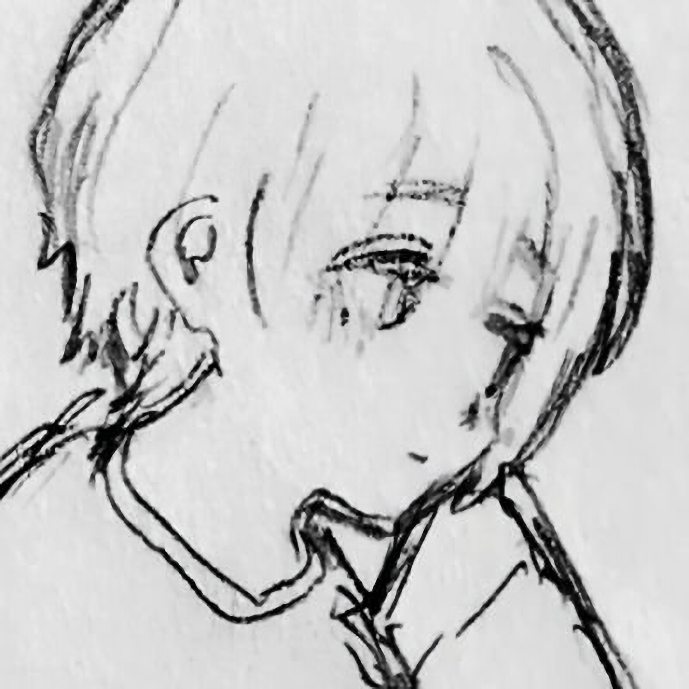

{kind=link}
桔梗
KP05 / DROPDEAD

最終更新 2023.10.12
なつめ、しきと読みます。
とても雑多なオタク。
嗜好はビターとKawaii。
普段はTwitter(X)とVRCに生息しています。
のそのそ……。
最近一番はまってます。
クトゥルフ7版がメインですが、他のシステムもぼちぼちやります。
ただTRPGできる友人が少ないやら予定が合いづらいやらで、中々思うようにプレイできていません……。
PLメインですが少しづつKPの経験も積んできているので、お仲間募集中です。切実。
タイマンも大人数も短期も長期も謎解きも戦闘も好きです。RPは好きですが経験値が足りてない。もっとやりたい。
多くに望まれる女の子を演じ続ける彼女と、それを支えようとした誰かの末路。
あめちゃんという女の子を大人気配信者にしたりいちゃいちゃしたりするゲームです。Switch版、Steam版とあるので是非。
超てんちゃん、そして何よりあめちゃんという存在が大好きです。
ニディガ展2あたりまではかなりグッズなど集めていたのですが、最近は色々とゴタゴタが目につくのでちょっと離れてます……。
かなり雑多に観る方ですが、経歴的にはハルヒから入って10年代前半の有名所はほぼリアタイしていた感じでしょうか。ガンダムもきららもラノベ原作etc.好きです。
最近は原作から入ってアニメを楽しみにすることもありますが、多くはアニメで興味を持ちコンテンツの造詣を深めていくことが多いかも。
作品としては、Fateシリーズ、アイマスシリーズ、シュタゲ、青ブタ、無職転生、etc...
絵が可愛いのが好き。儚い雰囲気があるとなお好き。ジャンプラを中心に読み漁っています。
特に好きなのはダンダダン、推しの子、ココロのプログラム。
特に最後のは掲載誌間違えてるんじゃないかと思うほど心理描写が緻密なラブコメです。おすすめ。
こちらも雑多にはなりますが、濃いのは失恋ソングと邦ロック、ボカロ。
Indigo la End、理芽、澤田空海理あたりはおそらく毎日耳にしています。
あとはSpotifyのおすすめの曲で少しづつ聴くアーティストが広がってきています。
雑な見出しで申し訳ないですが、PCスマホオーディオ等かなりハマっています。
ポタオデに関してはCIEMを自作したことがあるといえば雰囲気掴んでいただけるでしょうか。
気が向けばブログなんかで持っているものについて雑記を書くのもいいかもしれない。
説明不要。
ガチグロがだめです。リアルな虫とかそれ以上は無理……。当然TRPG中は頑張ります。
Twitterはアカウントがふたつあります。
メインはできるだけ静かにする方。
VRCのスクショとかTRPGの卓報告が多めです。
サブはもうなんか適当に……ごちゃごちゃ……
Discordにもよくいるかもです。自鯖でだらだらしたり、知り合いの鯖で通話したり。
自鯖はどこかで絡んだときなんかに招待送ったりしてる小規模なやつです。もし気になるときはDMください。
VRCではフレプラを中心にkawaiiになるべく日々改変中。
黒髪ボブが好きすぎて一年間続けていたんですが、最近ゆるふわカーブなベージュボブも使ってみています。短髪、ごちゃごちゃしすぎないシンプルなスタイル、リアルクローズ系とか好きです。
おしゃべりするの好きなので、色々趣味など共有しましょう。
Misskeyは今のところそんなに使ってません。友人の鯖に垢置かせてもらってます。
順次更新するつもりです。
たまにボイチェン使って入ります。
VRCで知らない人来たと勘違いさせちゃったらごめんね
一応、重度の精神疾患持ちです。主に恐怖や怯えが強いというだけですが、そういう傾向があるということで……
{kind=link}
{kind=link}
{kind=link}
{kind=link}